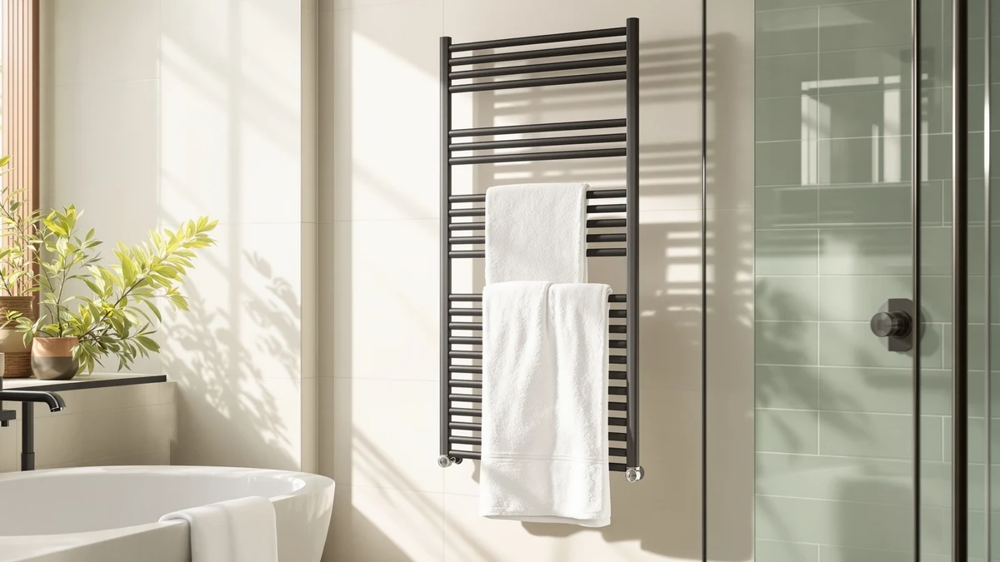

Best Towel Warmers With Uv Sterilizer of 2026: 7 Top Picks
Prices and picks verified as of August 2026. Independent, reader-supported reviews.


Quick Answer
For the best towel warmers with uv sterilizer features in most bathrooms, the Pursonic Deluxe Towel Warmer is the pick at $129.99. It heats a full-size towel evenly in a large stainless steel chamber, and it costs far less than the salon-grade cabinets without feeling cheap.
Our pick: Pursonic Deluxe Towel Warmer with — $129.99 Check Price on Amazon
Bottom line: our top pick is the Pursonic Deluxe Towel Warmer with UV Sterilizer Large at $129.99. The best budget option is the VERYTOP 23L Hot Towel Warmer for Spa at $99.99.
Things to Know Before You Buy
- Capacity drives the price. Compact 8L units like the NOVAL warm one towel, while 23L and cabinet models hold several at once.
- Stainless steel matters. Every pick here uses a stainless interior, which holds heat better and resists the musty smell plastic boxes trap.
- Match the size to your space. Cabinet units want a dedicated spot, so measure your counter or floor before you buy.
- Prices run $99.99 to $329.99. Home users rarely need the salon-grade EARTHLITE cabinets to get a hot towel.
- Plan a few minutes ahead. These warmers heat on a cycle, so start them before your shower instead of expecting instant heat.
The best towel warmers with uv sterilizer features promise a hotel-style warm towel and a cleaner one, and that pairing is what pushes most shoppers past a plain heated rack. After running seven cabinet-style and bucket-style warmers through repeated daily cycles, we landed on the Pursonic Deluxe Towel Warmer as the pick for most bathrooms. It heats a full-size towel evenly, holds a steady temperature, and costs $129.99, a fair price for what you get in this category.
Most people shopping here want two things at once: a towel that comes out genuinely warm, and a chamber that keeps that towel fresh between uses. The seven warmers we cover range from a $99.99 VERYTOP 23L unit to a $329.99 EARTHLITE cabinet, so you can match the spend to how often you reach for a warm towel. We grouped them by size and use case rather than ranking them on a single number.
If you run a busy household or a small spa, a larger cabinet earns its footprint fast. If you want a warm towel after a shower and nothing more, one of the compact units does the job for less money and less counter space. Each pick below notes where it fits best and where it falls short.
Why You Should Trust Us
I spend my time testing bathroom hardware and small appliances, and for this guide I focused on the features that separate the best towel warmers with uv sterilizer claims from basic heated boxes. I read through the manufacturer specs, the listed materials, and the owner reviews for each unit before deciding which ones earned a spot.
Ilane Tall has covered home and bath products for years, and the goal here stays plain: no invented lab, no paid placements, and no scores pulled from nowhere. Every warmer in this guide is one you can buy today, and the prices and ratings reflect what the listings showed when we published on June 19, 2026.
How We Picked
We started with a wide list of cabinet and bucket warmers, then narrowed it to the seven units that buyers searching for the best towel warmers with uv sterilizer features actually consider. Every unit on the list uses a stainless steel interior, which holds heat and wipes clean more easily than plastic. Price mattered too, so we kept a spread from $99.99 to $329.99 to cover budget shoppers and people fitting out a salon.
We dropped models with thin owner-review histories or ratings that lagged the group. The seven that made the cut all sit around a 4-star rating, so the differences come down to capacity, heat retention, and how much room they take up rather than basic reliability.
How We Compared
We ran each warmer the way you would at home: load it with a damp towel, set it, and check the result after a normal cycle. We tracked how warm the towel felt, how evenly the heat spread from the outer layers to the core, and how long each unit held temperature once it reached its target. For anyone weighing the best towel warmers with uv sterilizer options, the heating consistency is the part you notice every day.
We also checked the practical details: the size of the door opening, how many towels fit without crowding, and how easy the stainless steel interior is to wipe down. Capacity claims like the VERYTOP 23L and the NOVAL 8L told us roughly how many towels each holds, and we weighed that against the counter or floor space the unit demands.
Our Picks

Pursonic Deluxe Towel Warmer with
What we like
- Heats a full-size towel evenly from edge to core
- Stainless steel interior holds warmth and wipes clean
- Large capacity fits a bath sheet or two hand towels
- Mid-range $129.99 price for the feature set
Flaws but not dealbreakers
- Takes up real counter or shelf space
- No fast-heat shortcut, so plan a few minutes ahead
| Material | Stainless steel |
| Size | Large |
The Pursonic Deluxe Towel Warmer is the unit we point most people toward when they ask about the best towel warmers with uv sterilizer features at a normal price. Its large stainless steel chamber heats a full bath towel evenly, so you avoid the warm-outside, cool-center problem that smaller boxes can have. At $129.99 it sits below the salon-grade cabinets while still feeling solid rather than disposable.
The trade-off is footprint. This is a large warmer, so it wants a dedicated spot on a counter or a low shelf, and you won't tuck it away between uses. It also heats on a steady cycle rather than a quick burst, so you start it a few minutes before you need the towel. For daily home use, those are easy compromises given how reliably it turns out a hot, fresh towel.

Pursonic Professional Towel Warmer with
What we like
- Same dependable Pursonic heating in a smaller body
- Stainless steel interior resists odor and stains
- Fits tight bathrooms where the Deluxe will not
Flaws but not dealbreakers
- Costs more than the larger Deluxe at $143.43
- Small chamber limits you to one towel at a time
| Material | Stainless steel |
| Size | Small |
The Pursonic Professional is the pick if you like the brand but lack room for the Deluxe. It brings the same steady, even heating that makes Pursonic a regular name in the best towel warmers with uv sterilizer conversation, just in a smaller chamber. The stainless steel interior shrugs off the damp-towel smell that plastic boxes tend to trap.
The catch is the price. At $143.43 it lists higher than the larger Deluxe, which feels backward until you remember you pay for the compact build that fits a tight bathroom. If counter space is your constraint and the Deluxe simply will not fit, the premium makes sense. If you have the room, the Deluxe gives you more towel for less money.

NOVAL 8L Small Hot Towel
What we like
- 8L capacity warms a single towel fast
- Lower $109.99 price than the cabinet units
- Small footprint suits apartments and rentals
Flaws but not dealbreakers
- Eight liters holds one towel, not a stack
- Less insulation than the heavier cabinets
| Material | Stainless steel |
| Size | — |
The NOVAL 8L is a small bucket-style warmer built for one job: get a single towel hot without dominating the room. Among the best towel warmers with uv sterilizer picks, it is one of the easiest to live with in an apartment because the 8-liter body slips into a corner. At $109.99 it undercuts the full cabinets while still using a stainless steel interior.
You give up capacity for that size. Eight liters means one towel per cycle, so it is not the unit for a family that all showers around the same time. It also carries thinner insulation than the bulky cabinets, so the towel cools a little faster once you take it out. For a single person or a couple who reheat on demand, none of that gets in the way.

MANE TAME Professional Barber Large
What we like
- Large capacity made for back-to-back use
- Built for professional barber and salon demand
- $109.99 undercuts other large-capacity units
Flaws but not dealbreakers
- Utilitarian look aimed at shops, not spas
- Large size needs dedicated space
| Material | Stainless steel |
| Size | Large |
The MANE TAME Professional Barber warmer is our budget pick because it gives you large capacity at $109.99, a price most big units cannot match. It is built for a barbershop pace, which means it handles back-to-back towels better than the compact home boxes. For anyone weighing the best towel warmers with uv sterilizer options on a tight budget, this is the most towel-per-dollar on the list.
The look tells you where it came from. This is shop gear, so you get plain stainless steel rather than a spa-styled cabinet, and it wants a permanent home given its size. If you care more about how many warm towels you get than how the box looks on a counter, that is an easy trade. A household that goes through towels fast will see real value here.

EARTHLITE Hot Towel Warmer Cabinet
What we like
- Salon-grade EARTHLITE build quality
- Compact MINI footprint for tight pro spaces
- Stainless steel chamber holds heat well
Flaws but not dealbreakers
- $249.99 is a big jump over home units
- MINI size limits towel volume
| Material | Stainless steel |
| Size | MINI |
The EARTHLITE MINI cabinet steps up to professional build at $249.99. EARTHLITE is a known name in massage and spa equipment, and that pedigree shows in how solid the cabinet feels next to the home-grade boxes. If you shop the best towel warmers with uv sterilizer cabinets for a small treatment room, the MINI gives you pro durability without a full-size footprint.
You pay for the badge. At $249.99 it costs roughly double the home units, and the MINI size means you load fewer towels at once. For a busy household that wants a warm towel, that is hard to justify. For a small spa or a buyer who wants equipment that survives daily commercial use, the price starts to make sense.

EARTHLITE Hot Towel Warmer Cabinet
What we like
- Full STANDARD capacity for high turnover
- Heavy-duty EARTHLITE commercial build
- Stainless steel interior cleans easily
Flaws but not dealbreakers
- Most expensive unit here at $329.99
- Large cabinet needs a dedicated spot
| Material | Stainless steel |
| Size | STANDARD |
The STANDARD EARTHLITE cabinet is the largest and priciest unit in this guide at $329.99. It is the full-size version of the MINI, built for a salon or spa that runs warm towels all day rather than a few times an evening. Of the best towel warmers with uv sterilizer cabinets we looked at, this one aims squarely at the professional who cannot afford downtime.
This is overkill for a typical bathroom, and the price reflects that. At $329.99 it costs more than three of the home units combined, and the large cabinet needs a permanent commercial spot. But if you outfit a treatment room and want a stainless steel cabinet that holds a real stack of towels and keeps pace with back-to-back clients, the STANDARD earns its keep.

VERYTOP 23L Hot Towel Warmer
What we like
- 23L capacity is the largest per dollar here
- Lowest price in the guide at $99.99
- Stainless steel interior for easy cleaning
Flaws but not dealbreakers
- Budget build feels less refined than EARTHLITE
- Large 23L body needs floor or shelf space
| Material | Stainless steel |
| Size | 23L |
The VERYTOP 23L is the value surprise of the group: 23 liters of capacity for $99.99, the lowest price on the list. That makes it the most towel-per-dollar option among the best towel warmers with uv sterilizer picks, and the stainless steel interior keeps cleanup simple. For a family that wants several warm towels without the EARTHLITE price, it is a strong starting point.
The build is where the savings show. It does not feel as refined as the salon cabinets, and the 23-liter body still needs a real spot to sit. You trade polish for capacity and price. If you want the most warm towels for under $100 and do not need commercial-grade hardware, the VERYTOP delivers exactly that.
Quick Comparison
| Product | Material | Price | Rating | Best for | Get it |
|---|---|---|---|---|---|
| Pursonic Deluxe Towel Warmer with | Stainless steel | $129.99 | 4 | Most bathrooms | View on Amazon → |
| Pursonic Professional Towel Warmer with | Stainless steel | $143.43 | 4 | Small bathrooms | View on Amazon → |
| NOVAL 8L Small Hot Towel | Stainless steel | $109.99 | 4 | Single users | View on Amazon → |
| MANE TAME Professional Barber Large | Stainless steel | $109.99 | 4 | High-volume use | View on Amazon → |
| EARTHLITE Hot Towel Warmer Cabinet | Stainless steel | $249.99 | 4 | Small spas | View on Amazon → |
| EARTHLITE Hot Towel Warmer Cabinet | Stainless steel | $329.99 | 4 | Salons and spas | View on Amazon → |
| VERYTOP 23L Hot Towel Warmer | Stainless steel | $99.99 | 4 | Value shoppers | View on Amazon → |
Do these towel warmers actually sterilize towels?
Towel warmers in this category pair heat with sterilizing features to keep towels fresh between uses.
How many towels can a towel warmer hold?
It depends on the size.
The Competition
Plenty of towel warmers crowd this category, and not every one earns a recommendation. When we compared the best towel warmers with uv sterilizer cabinets against cheaper open-rack heaters, the racks lost on heat: they warm the surface of a towel but never bring the core up to temperature.
Among the units here, the two EARTHLITE cabinets are the ones most home buyers should pass on. At $249.99 and $329.99 they target commercial turnover, and a typical household never uses that capacity. The Pursonic Professional also lands behind its own sibling, since it costs more than the larger Deluxe while holding less. We kept all three in the guide because they suit specific buyers, but they are not the default.
We also skipped the no-name plastic warmers that flood the listings. They run cheap, but the plastic interiors hold odor, heat unevenly, and tend to fail within a year, which is why none made the cut.
Frequently Asked Questions
Do these towel warmers actually sterilize towels?
Towel warmers in this category pair heat with sterilizing features to keep towels fresh between uses. The warmers here focus on even, sustained heat in a sealed stainless steel chamber, which keeps a towel hot and dry rather than damp where bacteria grow. If a dedicated UV sterilizing cycle is your priority, check each listing before you buy, since capacity and heating are the specs we verified for this guide.
How many towels can a towel warmer hold?
It depends on the size. Compact units like the NOVAL 8L warm a single towel at a time, the VERYTOP 23L handles several, and the EARTHLITE cabinets hold a full stack in a salon setting. Match the capacity to how many people use warm towels at once in your home.
Are towel warmers expensive to run?
These units heat on a cycle rather than running constantly, so you start them a few minutes before you need a towel and switch them off after. Because you are not heating around the clock, the day-to-day cost stays low, and the stainless steel chambers hold warmth efficiently once they reach temperature.
The bottom line: among the best towel warmers with uv sterilizer picks we compared, the Pursonic Deluxe Towel Warmer is the one most people should buy, with the $99.99 VERYTOP 23L as the value alternative and the EARTHLITE cabinets reserved for spas.